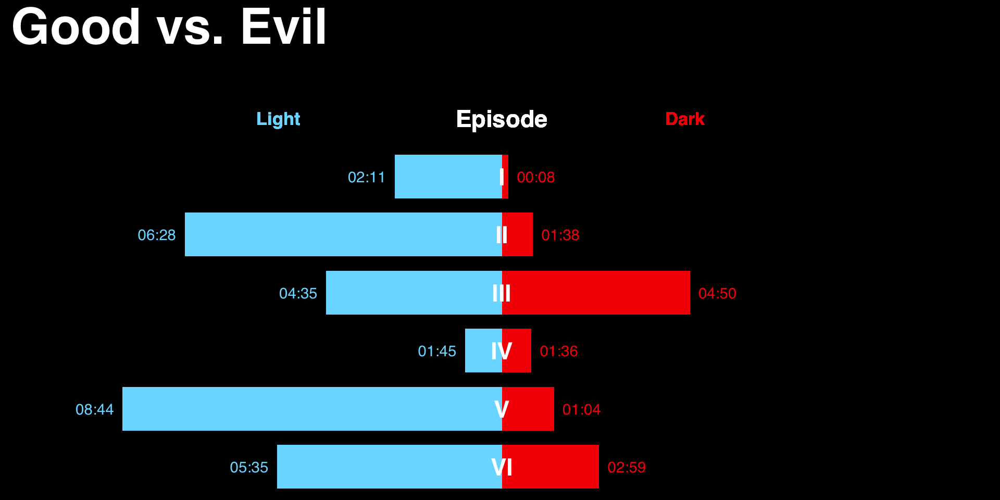
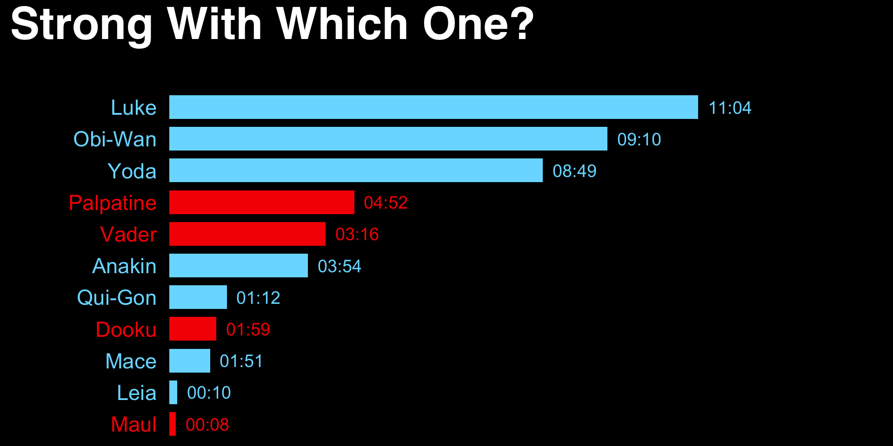
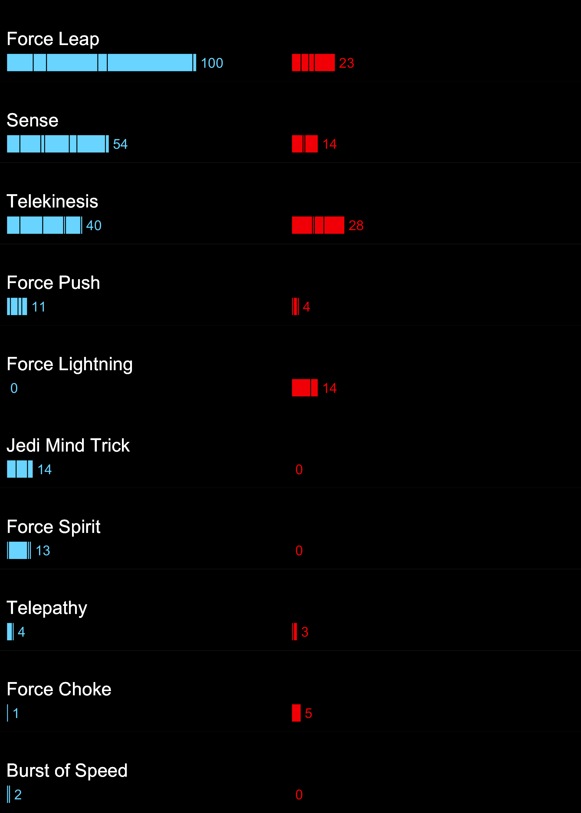
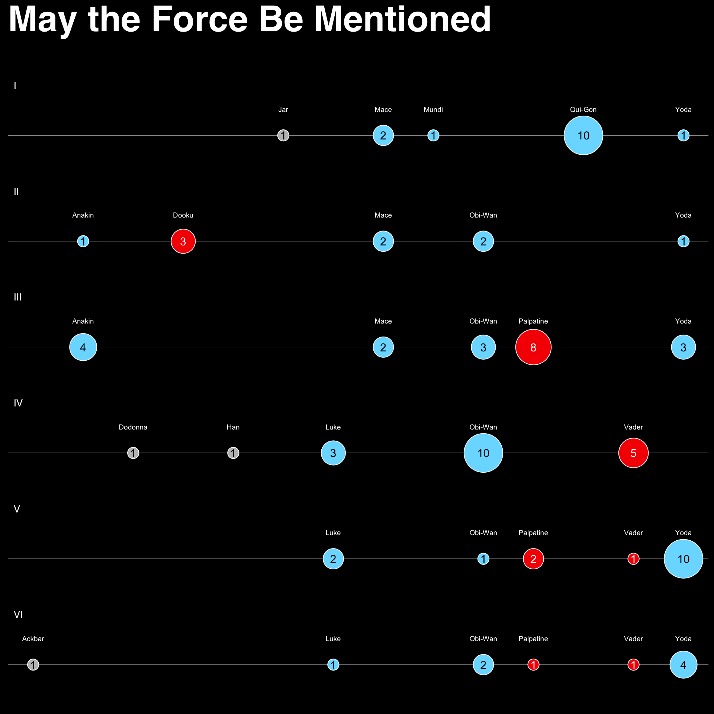
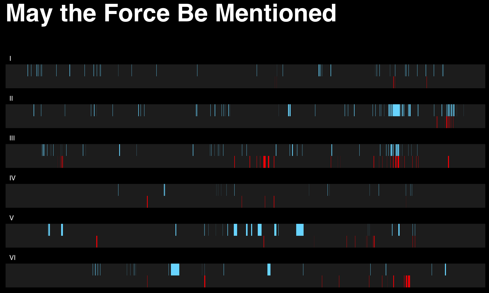

IN

This is what happens when you carelessly tweet things like this:
https://t.co/R3qVHEMTLo @hrbrmstr is there an R package? ;)
— Thorsten G. (@SaThaRiel74) January 8, 2016
It turns out this is a pretty decent data munging and ggplot2 wrangling exercise. If you web-inspect the Bloomberg page (if it’s not obvious I’ve fair-used some of their styles & images and their data) you’ll find they use a few CSVs. I grabbed them and put them into a data folder and wrapped the reading of them into functions. If this were a “real” package I’d’ve put them in R data files.
I didn’t cheat and use widgets or a separate HTML+SVG combo this time. Everything is ggplot2. That also puts limitations (yes, ggplot2 has limits) on what we can do. So I’ve ggplot2-ized the emulated visualizations, starting with “Good vs. Evil”. There are some neat tricks here to get space for the “Light | Episode | Dark” label line and a custom label function to convert the time. While I could have spent time allowing for a space in the middle, it was easier to just put the episode numbers at 0 (and it looks kinda cool IMO).

I was not about to deal with raster images and just leaned on ggplot2’s strengths at core visualizations here (and they kinda look like light saber bars if you squint). You can learn how to do colored bar label annotations by looking at this example.

I’m kinda proud of this one. This is some pretty complex use of facets, color/fill aesthetics and arranging the grobs. Again, no images since they’re kind of a pain to use with the precision necessary. I almost created a font from the images but I really had real stuff to do this weekend.
Applied Force

Many of the Bloomberg visualizations rely heavily on interactive effects and “May the Force Be Mentioned” also had images. I went with a static plot, sizing, coloring & labeling circles accordingly. Some more “fancy” facet work here for those inclined to poke at the code.

This ended up being an exercise more in data wrangling than anything else, but it came out pretty well, despite the lack of interactivity.

You can find all this on github, and may the FoRce be with you!